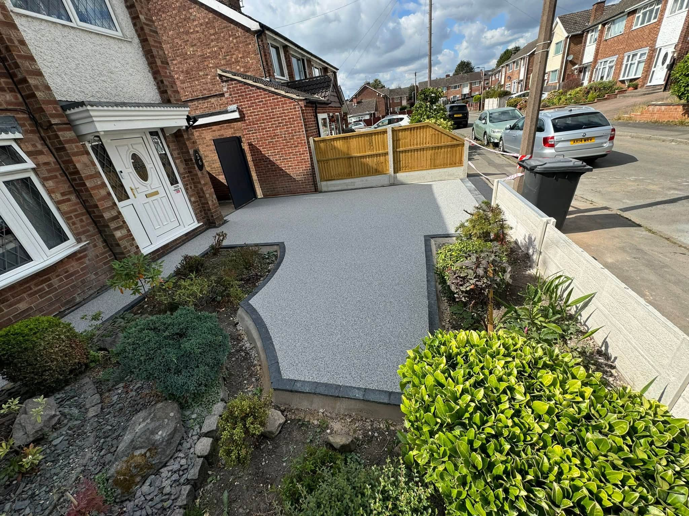
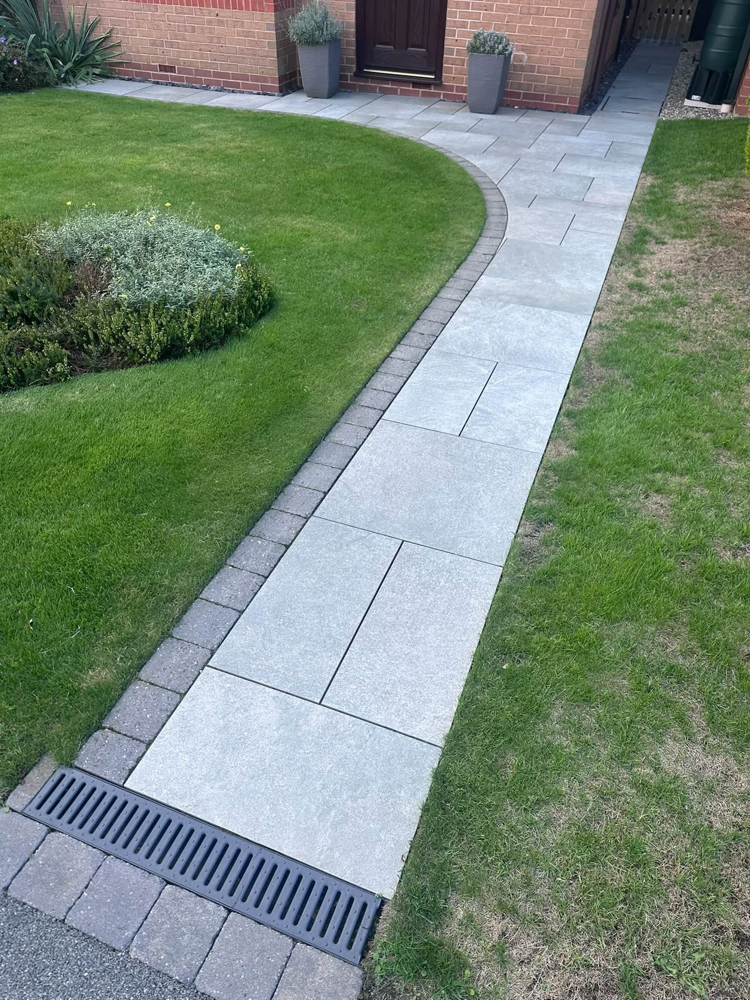
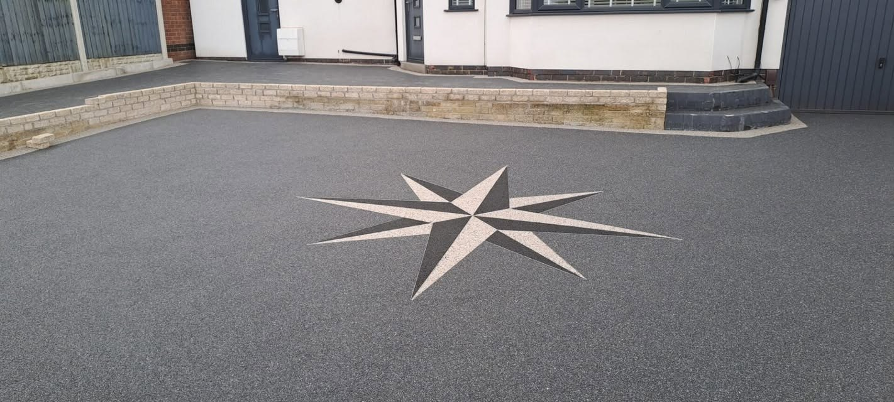
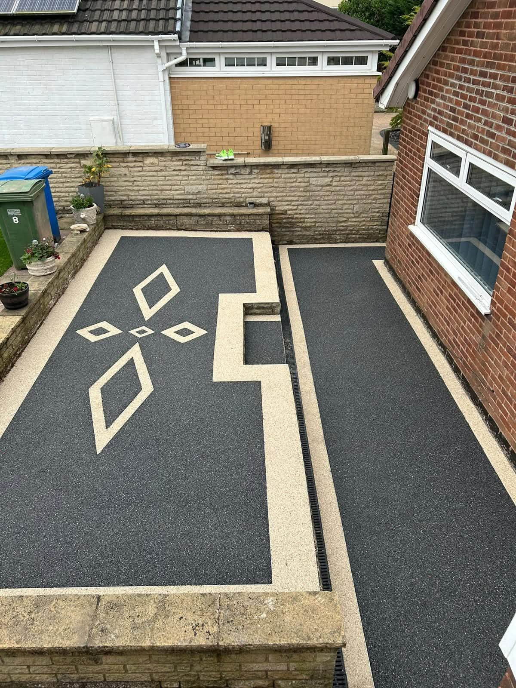
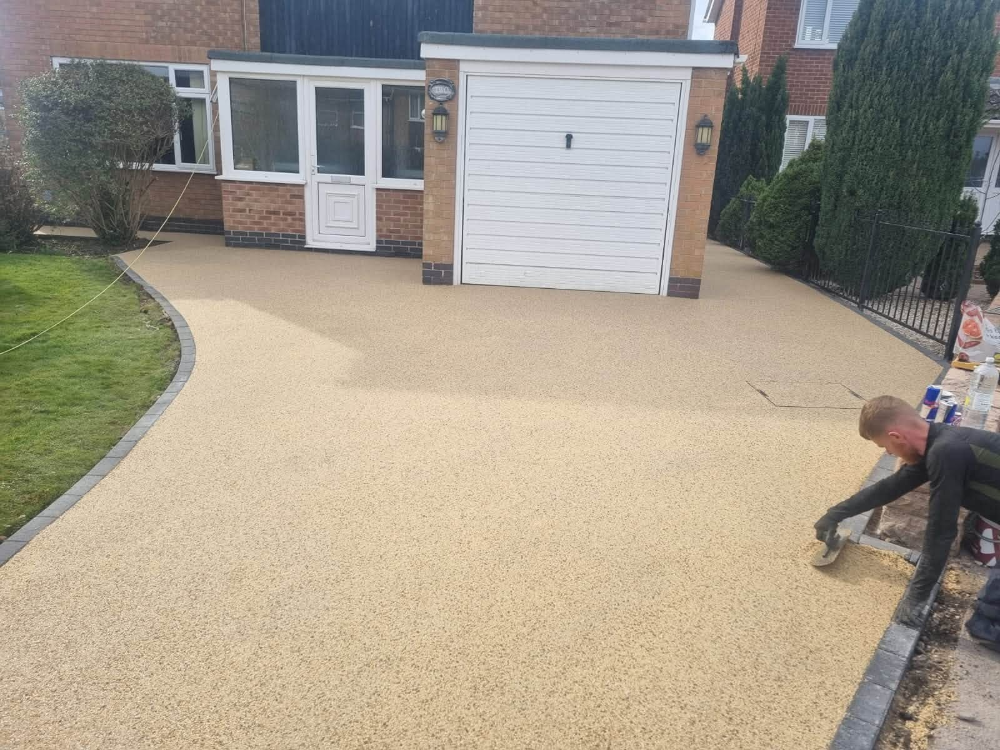
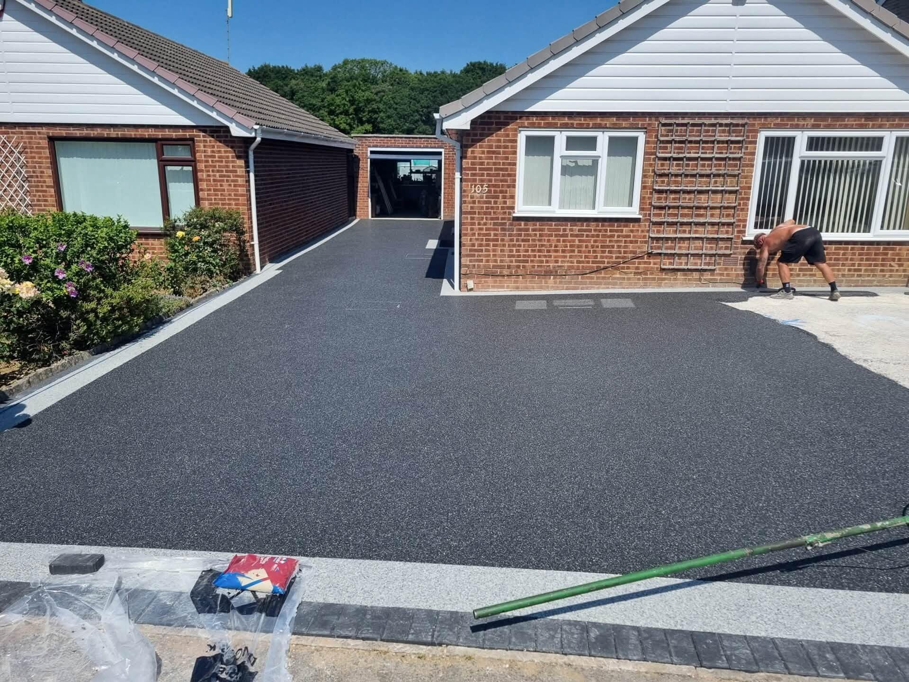
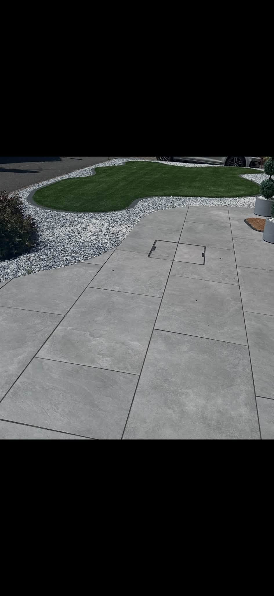
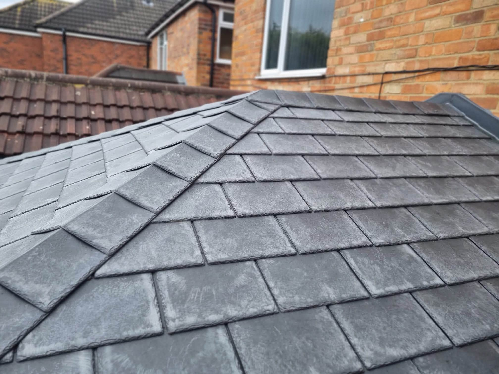

Resin DrivewaysSmooth surfaces with defined edges
PREMIUM DESIGNS LIMITED · OUTDOOR SURFACES
Considered spaces. Lasting impressions.
Resin driveways, decorative finishes, patios and paths that bring a more deliberate look to the space around your home.
Resin DrivewaysDecorative FinishesPatiosPathways
Decorative SurfacingIndividual patterns and finishes
Patios & PathsUsable, connected outdoor areas
Home ImprovementsDiscuss the exterior project you have in mind
RESIN DRIVEWAYS
A clean approach to the front door.
Premium Designs' supplied photographs show resin-bound driveways with contrasting borders, flowing layouts and a tidy finish beside planting and lawn areas.
Talk about your driveway →

DETAILS & FINISHES
More than a plain surface.
The portfolio includes star and geometric motifs worked into dark resin areas, plus pale resin entrances and crisp paving transitions. The finish is part of the design, not an afterthought.
Discuss the finish →

SUPPLIED PROJECTS
Outdoor work in the details.
A selection of the Premium Designs project photographs supplied for this site.


SURFACES & SPACES
From arrival to outdoor living.
Look at the way a driveway meets the house, how a path carries through the garden and where material choices add definition.
Plan your space →

PREMIUM DESIGNS LIMITED
Thoughtful work across the exterior.
The supplied portfolio spans resin driveways, decorative surfacing, garden paths and a roof finish. Use the project photographs to see the materials and details, then discuss the specific work you need.
01
Considered layouts
Paths, edges and surfaces planned around the property.
02
Distinctive details
Decorative motifs and contrasting borders.
03
Outdoor improvements
From the entrance through to the garden.
REQUEST A QUOTE
Tell us what you want to create.
Contact details have not been supplied. The form is a layout placeholder and can be connected to WhatsApp when the business number is added.
Phone: [ADD PHONE NUMBER]
Email: [ADD EMAIL ADDRESS]
PREMIUM DESIGNS LIMITED
Ready to start a project?
[ADD SERVICE AREA] · [ADD EMAIL ADDRESS]
Call [ADD PHONE NUMBER]WhatsApp [ADD PHONE NUMBER]